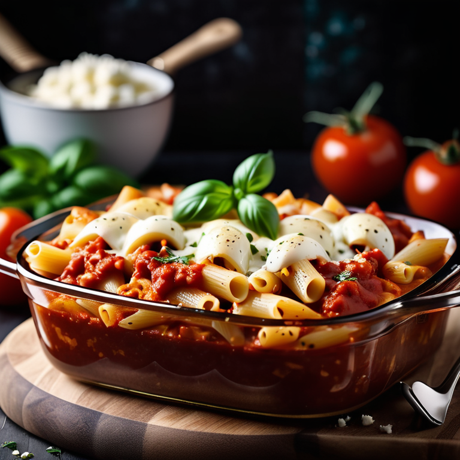

Classic Baked Ziti Recipe

A comforting pasta bake with ziti noodles, ricotta cheese, marinara sauce, and melted mozzarella.
Baked Ziti is a classic, cheesy, and comforting pasta dish made with layers of ziti pasta, creamy ricotta, rich marinara sauce, and plenty of melted mozzarella. Perfect for family dinners or meal prepping!
Ingredients
- For the Pasta:
- 1 lb ziti pasta
- Salt (for boiling water)
- For the Sauce:
- 1 lb ground beef or Italian sausage
- 1 small onion, diced
- 2 cloves garlic, minced
- 1 can (28 oz) crushed tomatoes
- 1 can (15 oz) tomato sauce
- 1 tsp dried basil
- 1 tsp dried oregano
- ½ tsp salt
- ½ tsp black pepper
- For the Cheese Mixture:
- 1 container (15 oz) ricotta cheese
- 1 egg
- ½ cup grated Parmesan cheese
- 2 cups shredded mozzarella cheese
Instructions
- Cook the Pasta
- Boil a large pot of salted water and cook ziti until al dente according to package instructions.
- Drain and set aside.
- Prepare the Sauce
- In a large skillet, cook ground meat over medium heat until browned. Drain excess fat.
- Add diced onion and cook until soft, about 3 minutes. Stir in minced garlic and cook for another 30 seconds.
- Add crushed tomatoes, tomato sauce, basil, oregano, salt, and pepper. Simmer for 15 minutes.
- Prepare the Cheese Mixture
- In a bowl, mix ricotta cheese, egg, Parmesan, and 1 cup of mozzarella until well combined.
- Assemble and Bake
- Preheat oven to 375°F (190°C).
- In a greased 9x13-inch baking dish, spread a layer of sauce.
- Add half of the cooked ziti, then spread half of the cheese mixture over it.
- Repeat layers, finishing with sauce on top.
- Sprinkle the remaining mozzarella over the dish.
- Bake for 20-25 minutes, until cheese is bubbly and golden.
- Let sit for 10 minutes before serving.
Home